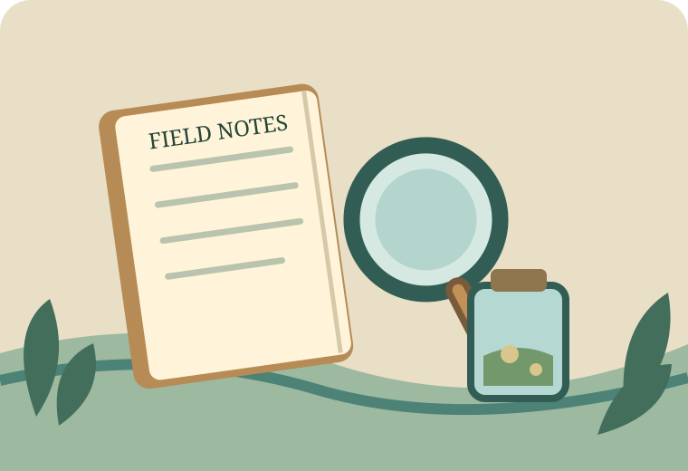

Silly Platypus | How
Pick an activity, head outside, and see what you notice.
Silly Platypus Makes It Easy To Begin
Start by choosing the kind of adventure that sounds interesting. A Puddle Explorer Kit is useful for a first creek visit, a River Ranger Guide is a good choice for learning about wildlife, and a Burrow Builder Activity brings the habitat indoors.
Once you have chosen an activity, read the instructions, gather what you need, and choose a safe place to explore. Stay on marked paths, follow posted rules, and keep a respectful distance from animals and sensitive habitats.
- Choose your adventure. Pick a kit or guide that matches your interests.
- Explore and observe. Use the prompts to notice plants, water, tracks, and wildlife.
- Share what you find. Sketch, write, or talk about the discoveries you made.

Silly Platypus Adventures Can Grow With You
New explorers can begin with one simple observation, while experienced nature lovers can use the guides to learn more about the details they encounter. There is no score and no rush. The point is to enjoy the process of learning.
After each outing, keep your notes and drawings together. Over time, you can look back at what you noticed in different seasons and see how your understanding of the natural world has grown.